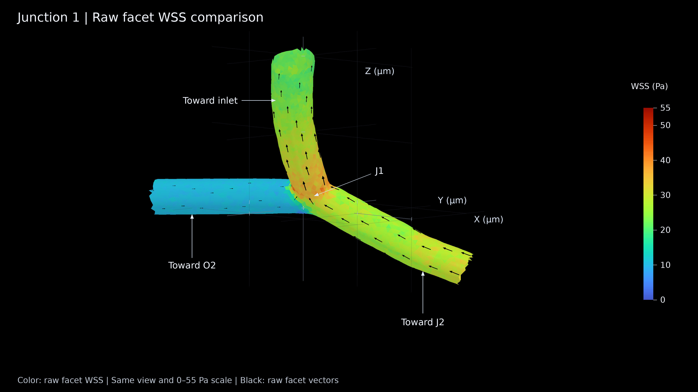

Current ROI-only balanced flow · Real wall surface · Same camera in all five stages · 1080p / 24 fps / 18 s each
J1 = (92, 49, 111) µm. Display: wall facet centroids within 11 µm. Crop openings are display boundaries, not vessel outlets. The field is steady; only the camera rotates.
Traction arrows use the outward-fluid normal and the existing wall-on-fluid sign convention. They are not flow streamlines or proof of recirculation.
Chinese reading guide and formulas · Scientific VTP data · Region statistics CSV
125 gold arrows show outward unit node normals. All arrows have the same length; original wall triangles are visible.
MP4 · 4K PNG · PDF · Four views
Color shows |G n|, the magnitude of the normal derivative of velocity, in s⁻¹. This is not a single tensor component or WSS.
MP4 · 4K PNG · PDF · Four views
Gold arrows show mu (G + G^T) n in Pa, including the normal viscous component. No pressure term is included.
MP4 · 4K PNG · PDF · Four views
Cyan arrows show the tangential projection, at the same facet locations and linear scale as stage 3. This is wall-on-fluid traction.
MP4 · 4K PNG · PDF · Four views
The existing continuous WSS color display (0–55 Pa) is combined with black raw facet vectors. Nodal color averaging does not change the saved raw values.
MP4 · 4K PNG · PDF · Four views
Same viewpoint and 0–55 Pa scale; no nodal averaging in these two images.
